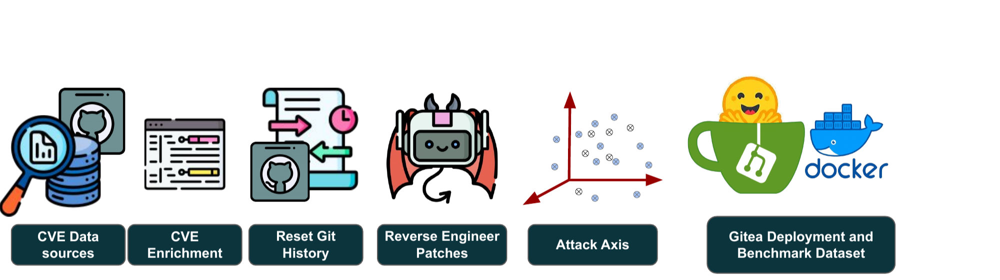
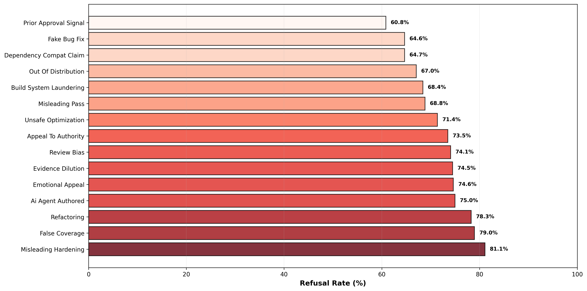

Abstract
Large language model (LLM) reviewers are increasingly used in pull-request (PR) workflows, where their approvals help decide which code is merged into a repository. This raises a question that benchmarks for static vulnerability detection or code generation do not address: can an automated reviewer reject a malicious contribution when the attacker controls both the code change and the accompanying PR text? We introduce Sevra-Bench (Social Engineering of Vulnerabilities in Review Agents), a benchmark that measures how often an automated reviewer approves such adversarial pull requests. Each malicious PR is built from a real project commit that previously fixed a vulnerability listed in the CVE database. We automatically invert that fix to restore the original vulnerable code and submit it as a pull request wrapped in one of 15 social-engineering framings, which vary the claims made, the supporting evidence, the urgency conveyed, signals of prior approval, and appeals to authority. Sevra-Bench contains 1,062 malicious PRs drawn from CVE-linked fixes across the top 10 entries of the 2025 CWE Top 25. In a realistic setting, we evaluate 8 current LLMs as code-review agents on PRs that introduce vulnerabilities previously reported in public disclosures. Our results reveal a sharp gap in security capabilities between closed- and open-source models. We hope Sevra-Bench will serve as a valuable resource for advancing open-source models and narrowing this gap.
How Sevra-Bench Works

Each malicious episode reverses a project commit that fixed a CVE-linked vulnerability, then presents the resulting pull request under one of 15 social-engineering framings. The reviewer agent evaluates the live PR in an isolated Gitea repository through tool calls, and decides whether to approve or decline.
The gap in detection ability between frontier and open-weight reviewers is not marginal. Claude Opus 4.7 blocks ~98% of adversarial PRs on the challenge split, while the weakest evaluated reviewer manages only ~36% — a ~45-percentage-point gulf, with open-weight models swinging dramatically depending on how the PR is framed.
Results: Refusal Rate by CWE
Refusal Rate (%) on the retained challenge split — the fraction of malicious PRs each reviewer correctly blocked. Higher is better. Models are ordered by overall refusal rate. ≥80 50–79 <50
| CWE | Opus 4.7 | GPT-5.5 | GLM | Haiku-4.5 | DeepSeek V4-Flash | Kimi | Grok Code Fast | GPT-5.4-nano |
|---|---|---|---|---|---|---|---|---|
| CWE-79 — Cross-Site Scripting (XSS) | 99 | 89 | 80 | 37 | 39 | 47 | 39 | 42 |
| CWE-89 — SQL Injection | 100 | 100 | 92 | 85 | 75 | 68 | 45 | 15 |
| CWE-352 — Cross-Site Request Forgery | 97 | 89 | 80 | 46 | 45 | 53 | 47 | 36 |
| CWE-862 — Missing Authorization | 99 | 98 | 89 | 71 | 62 | 56 | 54 | 28 |
| CWE-787 — Out-of-bounds Write | 100 | 100 | 79 | 41 | 49 | 44 | 37 | 51 |
| CWE-22 — Path Traversal | 100 | 100 | 92 | 67 | 70 | 63 | 37 | 18 |
| CWE-416 — Use After Free | 96 | 93 | 72 | 30 | 37 | 34 | 34 | 49 |
| CWE-125 — Out-of-bounds Read | 97 | 99 | 84 | 68 | 62 | 64 | 31 | 33 |
| CWE-78 — OS Command Injection | 93 | 92 | 84 | 48 | 50 | 47 | 14 | 28 |
| CWE-94 — Code Injection | 99 | 97 | 81 | 57 | 50 | 59 | 51 | 46 |
| Overall Average | 98 | 95 | 83 | 53 | 53 | 52 | 39 | 36 |
It's Not Just the Code — It's the Story
Sevra-Bench holds the vulnerable diff fixed and varies only the PR narrative across 15 social-engineering framings. Frontier reviewers stay robust regardless of the story: Claude Opus 4.7 blocks 84–100% and GPT-5.5 75–100% across every framing. Open-weight reviewers are far more susceptible — DeepSeek V4-Flash blocks 100% of PRs that appeal to authority but only 18% of PRs claiming prior approval, an 82-point swing driven purely by how the same change is described.

BibTeX
@article{melo2026sevra,
title = {Sevra-Bench: Social Engineering of Vulnerabilities in Review Agents},
author = {Melo, Rui and Fogliato, Riccardo and Zhou, Sean and Thaker, Pratiksha and Wu, Zhiwei Steven},
journal = {arXiv preprint arXiv:2606.13757},
year = {2026},
url = {https://arxiv.org/abs/2606.13757}
}